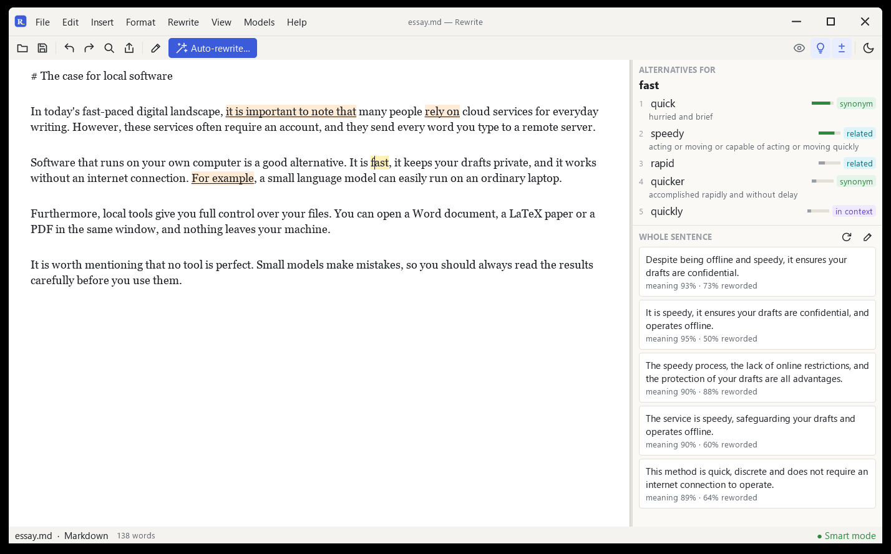
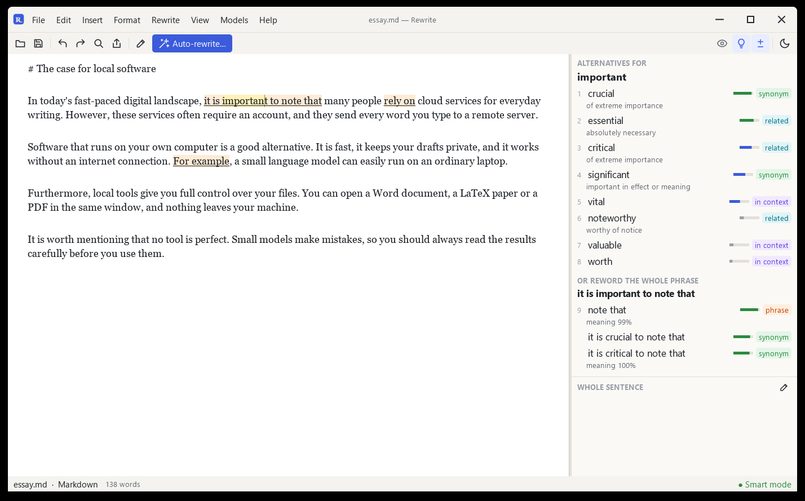

Utilize Use a writing tool that never goes online.
Rewrite rephrases words, phrases and whole sentences with small models on your own computer, checks spelling and grammar, and opens Word, LaTeX and PDF files. No account, no word limit, nothing uploaded.

Pick your system.
Installers come straight from the GitHub release. Systems marked "needs a build" have no installer yet: anyone can build one and send it in, and approved builds appear here.
AI draft Your words.
Paste an AI draft or open your file, choose Auto-rewrite, and Rewrite turns it into natural sentences that pass AI detectors and plagiarism checkers. Review every change, or apply them all at once.
One editor for the documents you already have.
Click a word. Get one that fits.
Alternatives ranked by how well they fit the sentence, plus rewrites of the whole phrase around it.
- Wordy phrases flagged as you type
- Alt+1 to Alt+9 applies a suggestion
- Built-in thesaurus when the models are off

Rewrite a whole document, then review it.
Light, medium or strong. Each change is shown against the original, to accept or reject.
- Selection or whole document
- Whole-sentence paraphrasing
- LaTeX, maths, code and links untouched

Edit .docx without Word.
Styles, lists, tables, pictures, charts, formulas and footnotes survive the round trip.
- .docx .doc .odt .fodt .rtf
- Formatting toolbar
- Export to PDF, HTML, Markdown, LaTeX

Your paper and its PDF, side by side.
Write LaTeX on the left and see the typeset PDF on the right, using your own TeX installation.
- F5 rebuilds
- Commands and equations never rewritten
- Live Markdown preview

Mark up and fix PDFs.
Highlight, underline, add notes, white out, replace a line of text, and rotate, move or merge pages.
- Convert a PDF into an editable document
- Insert and delete pages
- Add text and pictures

Close five apps. Open one.
| Instead of | Rewrite does |
|---|---|
| Opens and saves .docx, .odt and .rtf with their formatting | |
| Edits LaTeX next to a live PDF preview, without uploading the paper | |
| Highlights, notes, white-out, text edits, page merge and reorder | |
| Rephrases words, phrases and sentences with no word limit | |
| Spelling and grammar underlines with one-click fixes, offline |
Before you download.
Is it really free?
Yes. No trial, no subscription, no account. The code is on GitHub under the MIT licence with the Commons Clause: you may use and change it freely and keep the credit when you reuse it, but you may not sell it.
Does my text leave my computer?
No. The models run on your processor. The only download is the one-time model download of about 400 MB when you first start it, and you can skip that and use Lite mode with the built-in thesaurus.
Do I need a graphics card?
No. It runs on an ordinary laptop processor.
Windows says the installer is from an unknown publisher.
The installer is not code-signed yet. Choose "More info" and then "Run anyway". On macOS, right-click the app and choose Open the first time.
Will it break my LaTeX or Markdown?
No. Commands, environments, equations, citations, links and code are never changed; only the prose is.
My computer is not in the download list.
Choose its button anyway. It leads to a page with build steps and a form to send your build in. Once a build is checked and approved, its download link appears on this site for everyone.
Which languages does it support?
English.